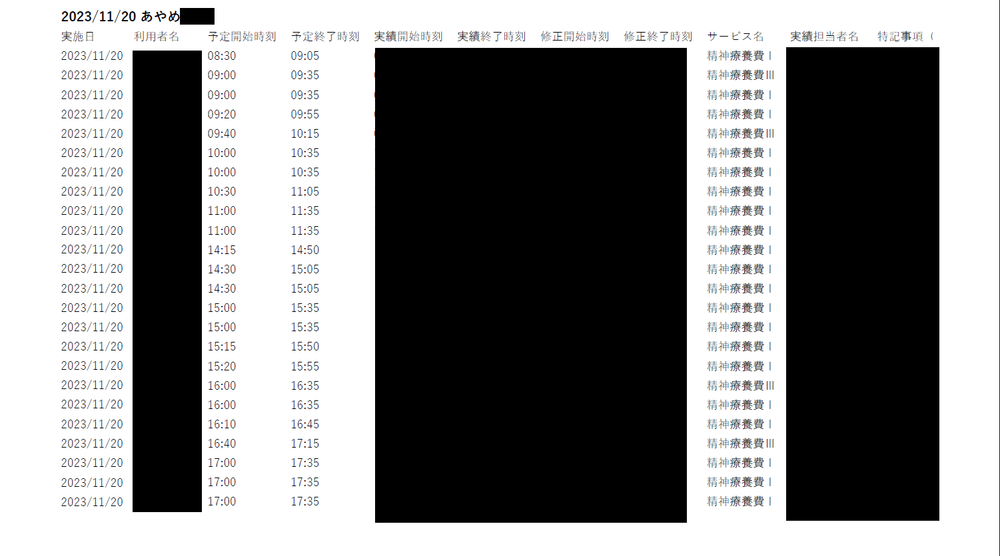

日誌CSVダウンロードツール
インストール・使用方法
ケアウイングにログイン、日付入力、ダウンロード、CSV編集等を自動化するツールです。
目次
1.インストール方法
ポータルサイト(https://amtplus.github.io/amtPlusWeb/)にアクセスします。

「各種ダウンロード」ボタンをクリックしてください。
「amtPlusClient-Installer.msi(64bit)」をクリックしてください。
右上に警告メッセージが表示されます。（文字が多少異なることがあります）
警告メッセージにカーソルを合わせるとオプション(縦の点3つ)が表示されるのでクリックしてください。
保存ボタンが表示されるのでクリックしてください。

再度警告ボタンが表示される。「詳細表示」をクリックしてください。
「保持する」をクリックしてください。
「ファイルを開く」をクリックしてください。
「開く」ボタンをクリックしてください。

表示されたファイルをダブルクリックしてください。

「詳細情報」をクリックしてください。
「実行」をクリックしてください。
「次へ」をクリックしてください。

「次へ」をクリックしてください。

「次へ」をクリックしてください。

「はい」をクリックしてください。
インストールが完了しました。「閉じる」をクリックしてください。
デスクトップにアイコンがあることを確認してください。
2.使用方法
デスクトップのアイコン「日誌ダウンロード」をクリックしてください。
下記の画面が起動します。

各項目の説明は以下の通りです。一度入力すると記憶されるため次回以降の入力は不要となります。

全て入力し、ダウンロードボタンを押すと、ケアウイングから情報を取得します。十数秒程かかります。
実績データが表示されます。内容を確認してください。

印刷ボタンをクリックすると接続されているプリンターから日誌が印刷されます。25件を超えると改ページされます。

↓出力結果
PDF出力ボタンをクリックするとPDFとして保存され、エクスプローラーが表示されます。(場所 C:\amtPlusClient\Export\)
↓出力結果

Excel出力ボタンをクリックするとExcelファイルとして保存され、エクスプローラーが表示されます。(場所 C:\amtPlusClient\Export\)

↓出力結果
メール作成補助機能
規定の出力先と文章を入力した状態でメーラーを開きます。作成した日誌を添付して送付してください。
メール作成ボタンをクリックしてください。
初回起動時には下記の画面が出ることがあります。「Outlook」を選択し、「常に使う」をクリックしてください。（表示される画面は多少異なることがあります）

宛先や、件名、本文が自動で入力された状態で、メーラーが起動されます。ステーション名や、日付はフォームに入力した内容が反映されます。
最後に作成した日誌を添付して送付してください。
注：Outlookアプリを立ち上げていないと送付されません。送信ボタンを押したあとでもよいので、Outlookアプリを立ち上げてください。